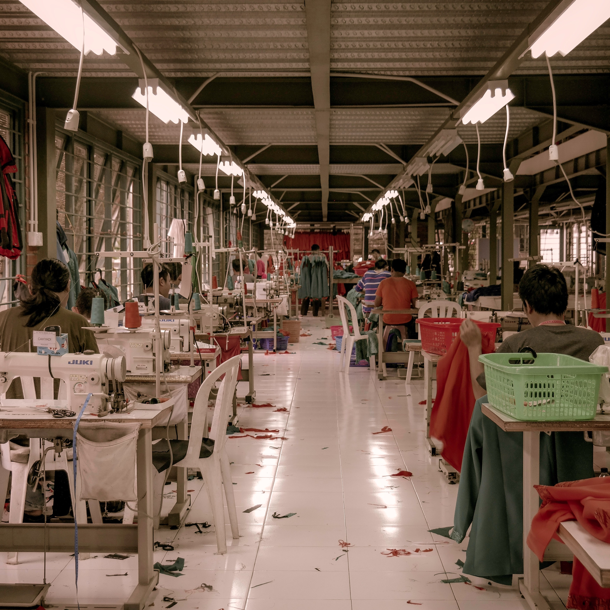
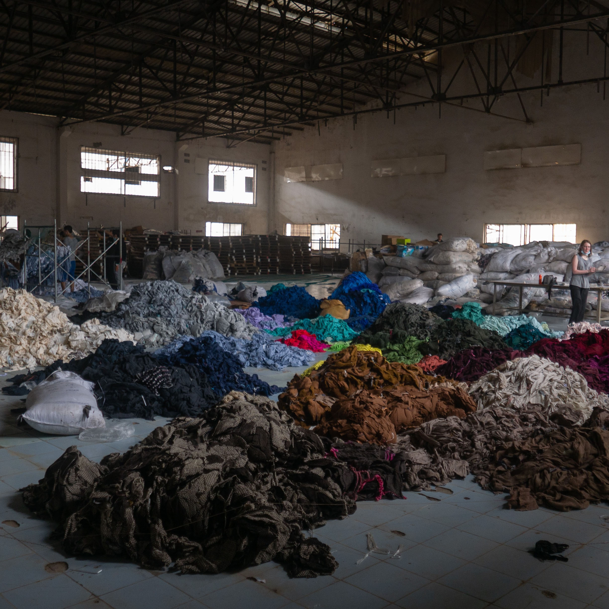

By the year 2030,
the fashion industry is predicted to increase its water consumption by 50 percent, and its carbon footprint will increase to 2,790 million tons while fashion waste is predicted to hit 148 million tons, according to the Copenhagen Fashion Summit. Hopefully someday soon, fast fashion will go out of style and sustainable fashion will take its place.
Each Image has a Fact About the Fast Fashion Industry Behind It -

More than $500 billion are lost every year due to lack of recycling and clothing utilisation
Clothing production has doubled – Garment usage lifetime has decreased

Fast fashion generated more CO2 than aviation and shipping combined
20% of global wastewater comes from textile dyeing
Fast fashion is responsible for 20-35% of ocean microplastics
Some fast fashion brands still employ child labor